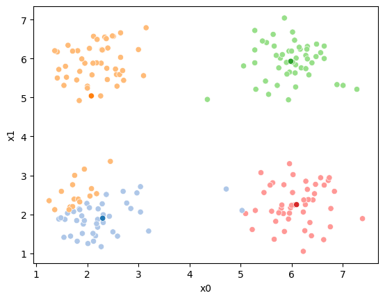
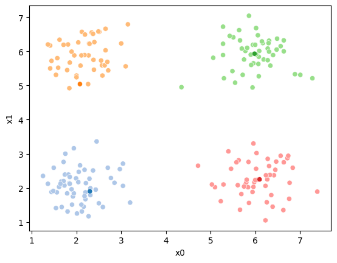
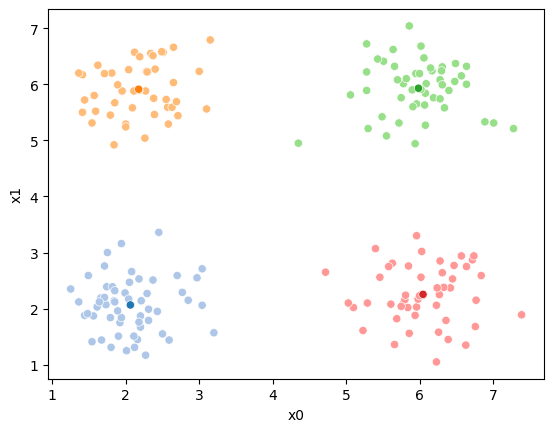

15. Clustering#
import matplotlib.pyplot as plt
import numpy as np
import itertools
import seaborn as sns
import pandas as pd
from sklearn import datasets
from sklearn.cluster import KMeans
from sklearn import metrics
import string
import itertools as it
%matplotlib inline
C = 4
N = 200
offset = 2
spacing = 2
# choose the first C uppcase letters using the builtin string class
classes = list(string.ascii_uppercase[:C])
# get the number of grid locations needed
G = int(np.ceil(np.sqrt(C)))
# get the locations for each axis
grid_locs = a = np.linspace(offset,offset+G*spacing,G)
# compute grid (i,j) for each combination of values above & keep C values
means = [(i,j) for i, j in it.product(grid_locs,grid_locs)][:C]
# store in dictionary with class labels
mu = {c: i for c, i in zip(classes,means)}
# random variances
sigma = {c: i*.5 for c, i in zip(classes,np.random.random(4))}
#randomly choose a class for each point, with equal probability
clusters_true = np.random.choice(classes,N)
# draw a randome point according to the means from above for each point
data = [np.random.multivariate_normal(mu[c],.25*np.eye(2)) for c in clusters_true]
# rounding to make display neater later
df = pd.DataFrame(data = data,columns = ['x' + str(i) for i in range(2)]).round(2)
# store in dataFram
df['true_cluster'] = clusters_true
sns.pairplot(data =df, hue='true_cluster')
<seaborn.axisgrid.PairGrid at 0x7ff998a5d760>
sns.pairplot(data =df)
<seaborn.axisgrid.PairGrid at 0x7ff959f39ee0>
data_cols =['x0','x1']
K = 4
mu = df[data_cols].sample(n=K).values
mu
array([[6.26, 1.58],
[2.65, 6.03],
[5.82, 6.1 ],
[6.42, 2.37]])
def mu_to_df(mu,i):
mu_df = pd.DataFrame(mu,columns=['x0','x1'])
mu_df['iteration'] = str(i)
mu_df['class'] = ['M'+str(i) for i in range(K)]
mu_df['type'] = 'mu'
return mu_df
cmap_pt = sns.color_palette('tab20',8)[1::2]
cmap_mu = sns.color_palette('tab20',8)[0::2]
sns.color_palette('tab20',8)
df[data_cols].head(1)
| x0 | x1 | |
|---|---|---|
| 0 | 1.84 | 2.14 |
mu[0]
array([6.26, 1.58])
df['1']= pd.concat([((df[data_cols]-mu_i)**2).sum(axis=1) for mu_i in mu],axis=1).idxmin(axis=1)
sfig = sns.scatterplot(data=df, x='x0',y='x1', palette=cmap_pt, hue='1')
mu_df = mu_to_df(mu,1)
sns.scatterplot(data =mu_df,x='x0',y='x1',hue='class',palette=cmap_mu,ax=sfig,legend=False)
<Axes: xlabel='x0', ylabel='x1'>
df.head()
| x0 | x1 | true_cluster | 1 | |
|---|---|---|---|---|
| 0 | 1.84 | 2.14 | A | 1 |
| 1 | 1.61 | 2.03 | A | 1 |
| 2 | 2.38 | 5.75 | B | 1 |
| 3 | 5.78 | 6.01 | D | 2 |
| 4 | 2.31 | 1.99 | A | 0 |
mu = df.groupby('1')[data_cols].mean().values
sfig = sns.scatterplot(data=df, x='x0',y='x1', palette=cmap_pt, hue='1')
mu_df = mu_to_df(mu,2)
sns.scatterplot(data =mu_df,x='x0',y='x1',hue='class',palette=cmap_mu,ax=sfig,legend=False)
<Axes: xlabel='x0', ylabel='x1'>
Now we can update the assignments again
df['2'] = pd.concat([((df[data_cols]-mu_i)**2).sum(axis=1) for mu_i in mu],axis=1).idxmin(axis=1)
sfig = sns.scatterplot(data=df, x='x0',y='x1', palette=cmap_pt, hue='2')
mu_df = mu_to_df(mu,2)
sns.scatterplot(data =mu_df,x='x0',y='x1',hue='class',palette=cmap_mu,ax=sfig,legend=False)
<Axes: xlabel='x0', ylabel='x1'>
df.head()
| x0 | x1 | true_cluster | 1 | 2 | |
|---|---|---|---|---|---|
| 0 | 1.84 | 2.14 | A | 1 | 0 |
| 1 | 1.61 | 2.03 | A | 1 | 0 |
| 2 | 2.38 | 5.75 | B | 1 | 1 |
| 3 | 5.78 | 6.01 | D | 2 | 2 |
| 4 | 2.31 | 1.99 | A | 0 | 0 |
i = 2
mu_list = [mu_to_df(mu,1),mu_to_df(mu,i)]
cur_old = str(i-1)
cur_new = str(i)
while sum(df[cur_old] !=df[cur_new]) >0:
cur_old = cur_new
i +=1
cur_new = str(i)
# update the means and plot with current generating assignments
mu = df.groupby(cur_old)[data_cols].mean().values
mu_df = mu_to_df(mu,i)
mu_list.append(mu_df)
fig = plt.figure()
sfig = sns.scatterplot(data =df,x='x0',y='x1',hue=cur_old,palette=cmap_pt,legend=False)
sns.scatterplot(data =mu_df,x='x0',y='x1',hue='class',palette=cmap_mu,ax=sfig,legend=False)
file_num = str(i*2 -1).zfill(2)
sfig.get_figure().savefig('kmeans' +file_num + '.png')
# update the assigments and plot with the associated means
df[cur_new] = pd.concat([((df[data_cols]-mu_i)**2).sum(axis=1) for mu_i in mu],axis=1).idxmin(axis=1)
fig = plt.figure()
sfig = sns.scatterplot(data =df,x='x0',y='x1',hue=cur_new,palette=cmap_pt,legend=False)
sns.scatterplot(data =mu_df,x='x0',y='x1',hue='class',palette=cmap_mu,ax=sfig,legend=False)
# plt.plot(mu[:,0],mu[:,1],marker='s',linewidth=0)
file_num = str(i*2).zfill(2)
sfig.get_figure().savefig('kmeans' +file_num + '.png')
n_iter = i



df
| x0 | x1 | true_cluster | 1 | 2 | 3 | 4 | |
|---|---|---|---|---|---|---|---|
| 0 | 1.84 | 2.14 | A | 1 | 0 | 0 | 0 |
| 1 | 1.61 | 2.03 | A | 1 | 0 | 0 | 0 |
| 2 | 2.38 | 5.75 | B | 1 | 1 | 1 | 1 |
| 3 | 5.78 | 6.01 | D | 2 | 2 | 2 | 2 |
| 4 | 2.31 | 1.99 | A | 0 | 0 | 0 | 0 |
| ... | ... | ... | ... | ... | ... | ... | ... |
| 195 | 2.69 | 5.69 | B | 1 | 1 | 1 | 1 |
| 196 | 6.02 | 5.91 | D | 2 | 2 | 2 | 2 |
| 197 | 3.04 | 2.06 | A | 0 | 0 | 0 | 0 |
| 198 | 2.00 | 5.24 | B | 1 | 1 | 1 | 1 |
| 199 | 6.23 | 2.06 | C | 3 | 3 | 3 | 3 |
200 rows × 7 columns
16. Evaluating Clustering Solutions#
km4 = KMeans(n_clusters=4)
df['km_clusters'] = km4.fit_predict(df[data_cols])
/opt/hostedtoolcache/Python/3.8.16/x64/lib/python3.8/site-packages/sklearn/cluster/_kmeans.py:870: FutureWarning: The default value of `n_init` will change from 10 to 'auto' in 1.4. Set the value of `n_init` explicitly to suppress the warning
warnings.warn(
sns.pairplot(data=df,vars=data_cols,hue='km_clusters',palette=cmap_pt)
<seaborn.axisgrid.PairGrid at 0x7ff958a9b280>
metrics.silhouette_score(df[data_cols],df['km_clusters'])
0.7527409780269934
metrics.silhouette_score(df[data_cols],df['true_cluster'])
0.7527409780269934
metrics.silhouette_score(df[data_cols],df['1'])
0.3797308831225936
metrics.silhouette_score(df[data_cols],df['2'])
0.5879336752270917
df.head()
| x0 | x1 | true_cluster | 1 | 2 | 3 | 4 | km_clusters | |
|---|---|---|---|---|---|---|---|---|
| 0 | 1.84 | 2.14 | A | 1 | 0 | 0 | 0 | 0 |
| 1 | 1.61 | 2.03 | A | 1 | 0 | 0 | 0 | 0 |
| 2 | 2.38 | 5.75 | B | 1 | 1 | 1 | 1 | 2 |
| 3 | 5.78 | 6.01 | D | 2 | 2 | 2 | 2 | 1 |
| 4 | 2.31 | 1.99 | A | 0 | 0 | 0 | 0 | 0 |
metrics.adjusted_mutual_info_score(df['true_cluster'],df['km_clusters'])
1.0
metrics.adjusted_mutual_info_score(df['true_cluster'],df['1'])
0.714577183768974
metrics.adjusted_mutual_info_score(df['true_cluster'],df['2'])
0.8428073620195066